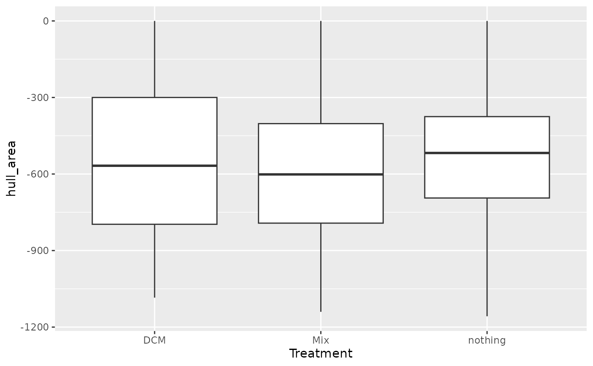
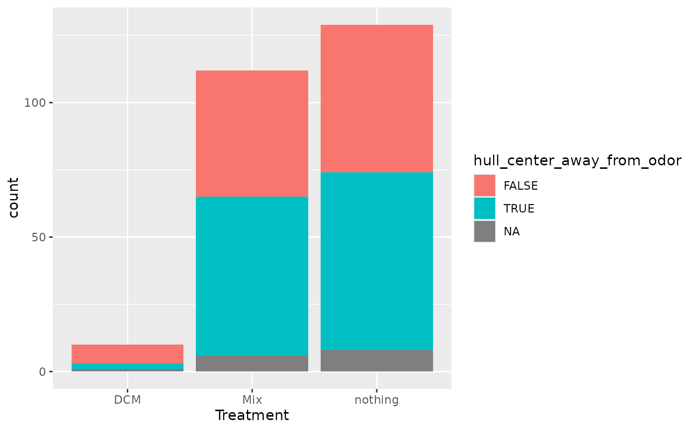

Map convex hull on MiteMap
convex_hull_mitemap.RdMap convex hull on MiteMap
Usage
convex_hull_mitemap(
MiteMap,
unity = 1,
tbe = 3,
plot_show = TRUE,
probs_quantile = 0.68,
min_nb_spatial_points = 2,
each_point_count_one = FALSE,
hull_col = "red",
plot_center_of_mass = TRUE,
verbose = TRUE
)Arguments
- MiteMap
(required) The result of import_mitemap
- unity
(default = 1): size of square grid in mm
- tbe
(default = 3)
- plot_show
(Logical, default = TRUE) : Do we plot all mitemap ?
- probs_quantile
(default = 0.68)
- min_nb_spatial_points
: Minimum number of spatial point to keep the sample
- each_point_count_one
(Logical ; default = FALSE) If TRUE, each spatial point count only for one time step instead. By default, if the mite stay 3t at a given spatial location, the spatial point count 3 times in the construction of the convex hull.
- hull_col
color of hull area
- plot_center_of_mass
(Logical, default = TRUE): Do we plot the center of mass?
- verbose
(Logical, default = TRUE) If TRUE, the function print additional
Value
A dataframe with convex hull information for each run (File_name) and plot of convex hull for each run if plot_show = TRUE.
Examples
if (FALSE) { # \dontrun{
ch <- convex_hull_mitemap(MM_data)
} # }
ch <- convex_hull_mitemap(MM_data, plot_show = FALSE)
#> ℹ Computing convex hulls for 251 runs
#> ! No convex hull for MM012022_05_17_10h23m30s (no distance < quantile)
#> ! No convex hull for MM012022_05_17_15h23m58s (no distance < quantile)
#> ! No convex hull for MM012022_05_17_15h33m59s (no distance < quantile)
#> Processing runs ■■■■■■■■■■■ 35% | ETA: 2s
#> Processing runs ■■■■■■■■■■■■ 35% | ETA: 2s
#> ! No convex hull for MM012022_05_17_20h27m19s (not enough spatial points)
#> Processing runs ■■■■■■■■■■■■ 35% | ETA: 2s
#> ! No convex hull for MM012022_05_17_20h27m50s (not enough spatial points)
#> Processing runs ■■■■■■■■■■■■ 35% | ETA: 2s
#> ! No convex hull for MM012022_05_18_00h25m45s (no distance < quantile)
#> Processing runs ■■■■■■■■■■■■ 35% | ETA: 2s
#> ! No convex hull for MM012022_05_18_02h24m49s (not enough spatial points)
#> Processing runs ■■■■■■■■■■■■ 35% | ETA: 2s
#> Processing runs ■■■■■■■■■■■■■■■■■■■■■■■■■■■■■■■ 100% | ETA: 0s
full_join(ch, MM_data) |>
ggplot(aes(x = Treatment, y = hull_area)) +
geom_boxplot()
#> Joining with `by = join_by(File_name)`
#> Warning: Removed 9995 rows containing non-finite outside the scale range
#> (`stat_boxplot()`).

full_join(ch, MM_data) |>
group_by(File_name) |>
summarise(
hull_center_away_from_odor = sum(center_of_mass_x > 0) > 0,
Treatment = unique(Treatment)
) |>
ggplot(aes(fill = hull_center_away_from_odor, x = Treatment)) +
geom_bar()
#> Joining with `by = join_by(File_name)`
